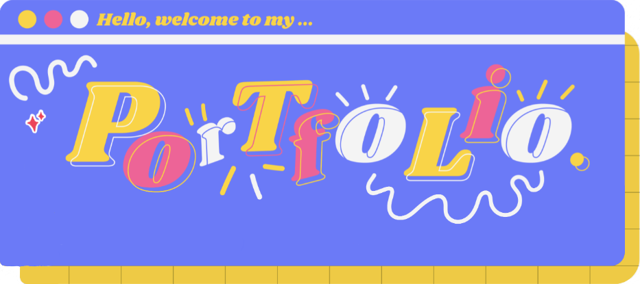
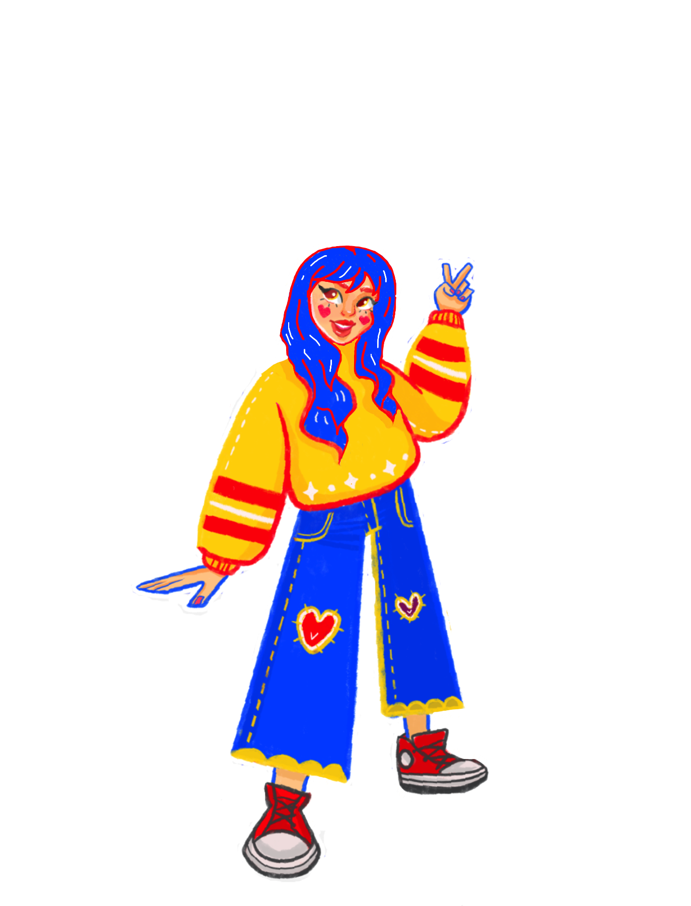
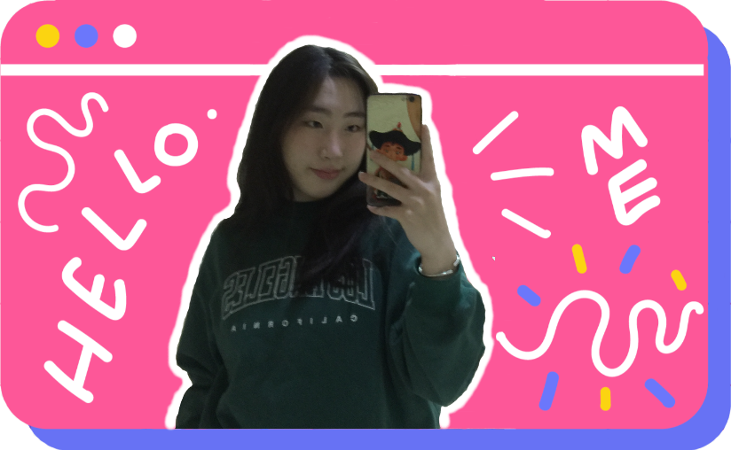
Hey there! I am Tuul. I am currently studying Bachelor programme in Information System Management in University of Finance and Economics.
I am interested in gaining new knowledge,developing fun, creative, and bright UI/UX designs. Along with my arts and crafts hobbies.
You will be able to get a cheerful and positive vibe through the vibrant colors and adorable projects. Hopefully, you'll enjoy seeing my work.

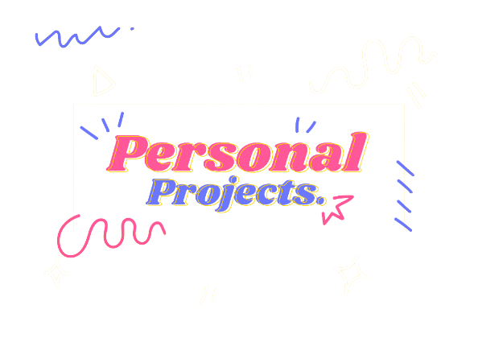
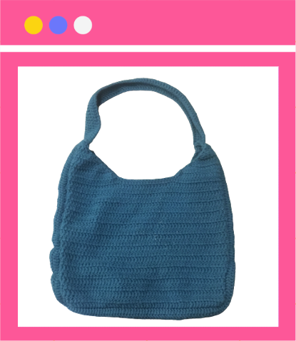
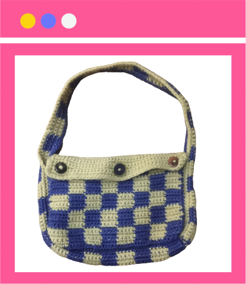
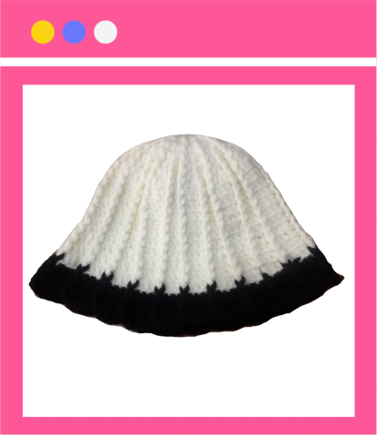
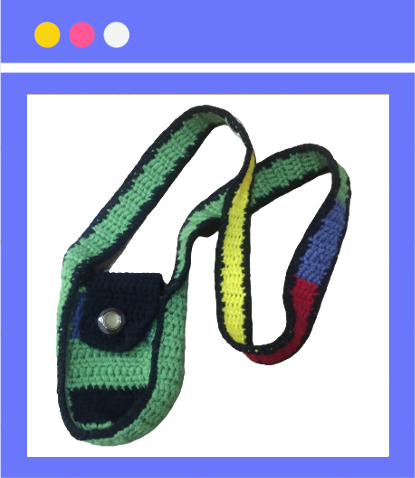
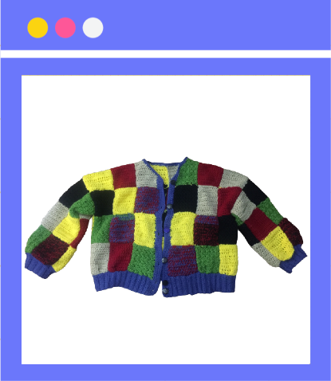
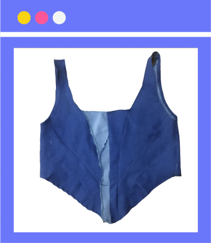
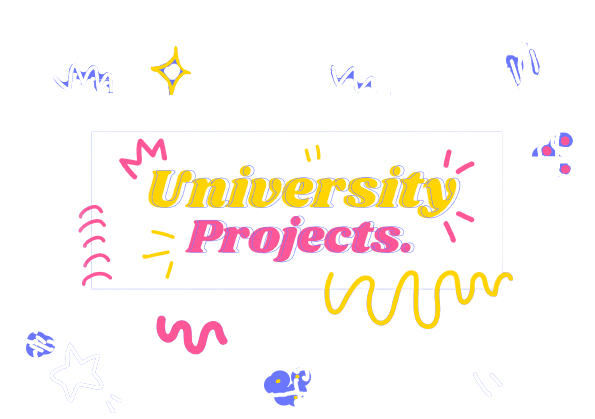
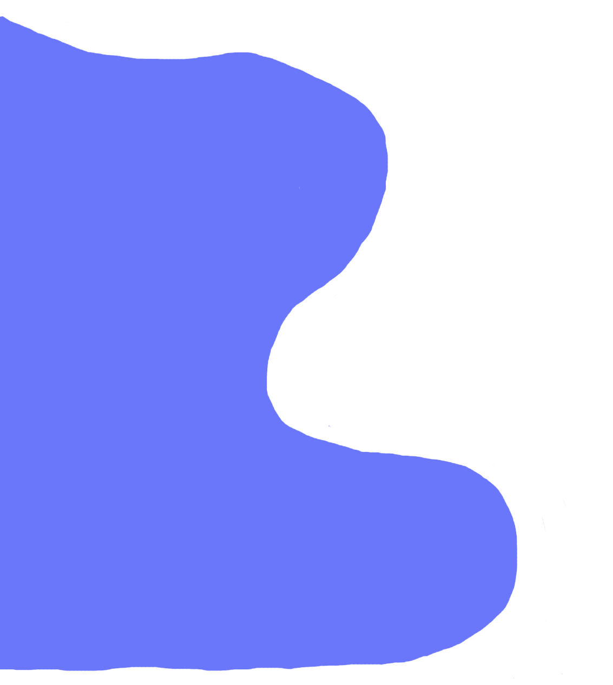